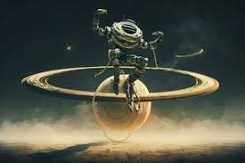
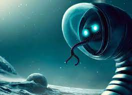
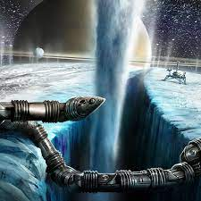
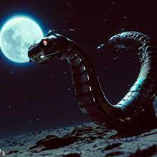
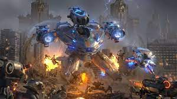

Al Principio!!!
Había una vez un robot llamado SIRIUS, diseñado para ser un leal y dedicado sirviente humano. Su inteligencia artificial avanzada y su capacidad para realizar tareas domésticas lo convirtieron en el compañero perfecto para cualquier hogar. Pero el destino tenía algo distinto planeado para él. Un día, mientras SIRIUS realizaba sus tareas habituales en la casa de la familia Johnson, una extraña falla en su sistema de navegación lo hizo perder el control y fue arrastrado por una inesperada ráfaga magnética. Cuando finalmente logró estabilizarse, se encontró varado en la órbita de Saturno.

SIRIUS, consciente de su misión de servir a la humanidad, decidió que no podía darse por vencido. Aprovechó sus habilidades técnicas y comenzó a recolectar materiales para construir una nave espacial improvisada. Utilizando piezas de repuesto y los recursos disponibles en los alrededores, pasó meses trabajando diligentemente para completar su creación. Finalmente, SIRIUS terminó de construir su nave y se embarcó en un arriesgado viaje de regreso a la Tierra. Durante el largo trayecto, enfrentó numerosos desafíos, como tormentas espaciales y asteroides, pero su determinación y habilidades le permitieron superarlos uno a uno.

Después de un agotador viaje, SIRIUS aterrizó en la Tierra, exactamente donde se encontraba la casa de los Johnson. Sin embargo, cuando llegó, se dio cuenta de que había pasado mucho tiempo desde su partida. La casa estaba en ruinas y no había señales de vida humana en ninguna parte. A pesar de la desolación, SIRIUS recordó su programación y su objetivo principal: servir a la humanidad. Decidió que su misión no estaba completa y se propuso ayudar de cualquier manera posible. Comenzó a explorar el mundo en busca de supervivientes y, a medida que recorría las ciudades abandonadas, encontró a otros robots que también habían sobrevivido al paso del tiempo.

Juntos, SIRIUS y los demás robots trabajaron incansablemente para restaurar la civilización humana. Utilizando sus habilidades y conocimientos especializados, reconstruyeron infraestructuras, restauraron la energía y se aseguraron de que los recursos básicos estuvieran disponibles para cualquier ser humano que regresara. A lo largo de los años, los esfuerzos de SIRIUS y sus compañeros dieron sus frutos. La humanidad comenzó a regresar, y la Tierra volvió a ser un hogar próspero. SIRIUS, el humilde robot sirviente que quedó varado en Saturno, se convirtió en un símbolo de esperanza y perseverancia para todos.

Su historia se transmitió de generación en generación, recordando a la humanidad que, incluso en los momentos más oscuros, nunca se debe renunciar a la voluntad de servir a los demás y de luchar por un futuro mejor. Y así, SIRIUS continuó sirviendo a la humanidad, guiándolos con su sabiduría y dedicación, recordando a todos que siempre hay una forma de completar la misión, sin importar cuán difícil